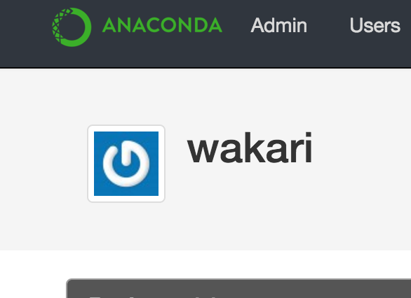

Continuum Analytics: Anaconda Enterprise Deployment Runbooks¶
1 Anaconda Repository Runbook¶
- Version: 4.0-3 | Aug 05, 2016
This following runbook walks through the steps needed to install Anaconda Repository. The runbook is designed for two audiences: those who have direct access to the internet for installation and those where such access is not available or restricted for security reasons. For these restricted a.k.a. “Air Gap” environments, Continuum ships the entire Anaconda product suite on portable storage medium or as a downloadable TAR archive. Where necessary, additional instructions for Air Gap environments are noted. If you have any questions about the instructions, please contact your sales representative or Priority Support team, if applicable, for additional assistance.

1.1 Requirements¶
1.1.1 Hardware Requirements¶
- Physical server or VM
- CPU: 2 x 64-bit 2 2.8GHz 8.00GT/s CPUs or better
- Memory: 32GB RAM (per 50 users)
- Storage: Recommended minimum of 300GB; Additional space is recommended if the repository is will be used to store packages built by the customer.
1.1.2 Software Requirements¶
- RHEL/CentOS 6.7 (Other operating systems are supported, however this document assumes RHEL or CentOS 6.7)
- MongoDB version 2.6
- Anaconda Repository license file - given as part of the welcome packet - contact your sales representative or support representative if you cannot find your license.
- cron: The anaconda-server user needs to add an entry to cron to start the server on reboot
1.1.3 Linux System Accounts Required¶
Some Linux system accounts (UIDs) are added to the system during installation. If your organization requires special actions, here is the list of UIDs:
- mongod (RHEL) or mongodb (Ubuntu/Debian) - Created by the RPM or deb package
- anaconda-server: Created manually during installation
1.1.4 Security Requirements¶
- Privileged (root) access or sudo capabilities
- Ability to make (optional) iptables modifications
NOTE: SELinux does not have to be disabled for Anaconda Repository operation
1.1.5 Network Requirements¶
- TCP Ports
- Inbound TCP 8080 (Anaconda Repository)
- Inbound TCP 22 (SSH)
- Outbound TCP 443 (to Anaconda Cloud or local Anaconda Repository)
- Outbound TCP 25 (SMTP)
- Outbound TCP 389/636 (LDAP(s))
1.1.6 Other Requirements¶
Assuming the above requirements are met, there are no additional dependencies necessary for Anaconda Repository.
1.1.7 Air Gap vs. Regular Installation¶
As stated previously, this document contains installation instructions for two audiences: those with internet access on the destination server(s) and those who have no access to internet resources. Many of the steps below have two sections: Air Gap Installation and Regular Installation. Those without internet access should follow the Air Gap Installation instructions and those with internet access should follow Regular Installation instructions.
1.1.8 Air Gap Media¶
This document assumes that the Air Gap media is located at /installer on the server where the software is being installed.
1.1.9 Air Gap media contents¶
/installer
___ anaconda-suite
___ pkgs
mongodb-org-tools-2.6.8-1.x86_64.rpm
mongodb-org-shell-2.6.8-1.x86_64.rpm
mongodb-org-server-2.6.8-1.x86_64.rpm
mongodb-org-mongos-2.6.8-1.x86_64.rpm
mongodb-org-2.6.8-1.x86_64.rpm
1.2 Anaconda Repository Installation¶
The following sections detail the steps required to install Anaconda Repository.
1.2.1 Install MongoDB¶
1.2.2 Download MongoDB packages¶
- Air Gap Installation: Skip this step.
- Regular Installation:
RPM_CDN="https://820451f3d8380952ce65-4cc6343b423784e82fd202bb87cf87cf.ssl.cf1.rackcdn.com"
curl -O $RPM_CDN/mongodb-org-tools-2.6.8-1.x86_64.rpm
curl -O $RPM_CDN/mongodb-org-shell-2.6.8-1.x86_64.rpm
curl -O $RPM_CDN/mongodb-org-server-2.6.8-1.x86_64.rpm
curl -O $RPM_CDN/mongodb-org-mongos-2.6.8-1.x86_64.rpm
curl -O $RPM_CDN/mongodb-org-2.6.8-1.x86_64.rpm
1.2.3 Install MongoDB packages¶
- Air Gap Installation:
sudo yum install -y /installer/mongodb-org*
- Regular Installation:
sudo yum install -y mongodb-org*
1.2.4 Start mongodb¶
sudo service mongod start
1.3 Configure Anaconda Repository¶
1.3.1 Create Anaconda Repository administrator account¶
In a terminal window, create a new user account for Anaconda Repository named “anaconda-server”:
sudo useradd -m anaconda-server
NOTE: The anaconda-server user is the default for installing Anaconda Repository. Any username can be used, however the use of the root user is discouraged.
1.3.2 Create Anaconda Repository directories¶
sudo mkdir -m 0770 /etc/anaconda-server
sudo mkdir -m 0770 /var/log/anaconda-server
sudo mkdir -m 0770 -p /opt/anaconda-server/package-storage
sudo mkdir -m 0770 /etc/anaconda-server/mirrors
1.3.3 Give the anaconda-server user ownership of directories¶
sudo chown -R anaconda-server. /etc/anaconda-server
sudo chown -R anaconda-server. /var/log/anaconda-server
sudo chown -R anaconda-server. /opt/anaconda-server/package-storage
sudo chown -R anaconda-server. /etc/anaconda-server/mirrors
1.3.4 Switch to the Anaconda Repository administrator account¶
sudo su - anaconda-server
1.4 Install Miniconda bootstrap version¶
1.4.1 Fetch the download script using curl¶
- Air Gap Installation: Skip this step.
- Regular Installation:
curl 'http://repo.continuum.io/miniconda/Miniconda2-latest-Linux-x86_64.sh' > Miniconda.sh
1.4.2 Run the Miniconda.sh installer script¶
- Air Gap Installation:
bash /installer/anaconda-suite/miniconda/Miniconda-latest-Linux-x86_64.sh
- Regular Installation:
bash Miniconda.sh
1.4.3 Review and accept the license terms¶
Welcome to Miniconda (by Continuum Analytics, Inc.)
In order to continue the installation process, please review the license agreement.
Please, press ENTER to continue. Do you approve the license terms? [yes|no] yes
1.4.4 Accept the default location or specify an alternative:¶
Miniconda will now be installed into this location:
/home/anaconda-server/miniconda2
-Press ENTER to confirm the location
-Press CTRL-C to abort the installation
-Or specify a different location below
[/home/anaconda-server/miniconda2] >>>" [Press ENTER]
PREFIX=/home/anaconda-server/miniconda2
1.4.5 Update the anaconda-server user’s path¶
Do you wish the installer to prepend the Miniconda install location to PATH in your /home/anaconda-server/.bashrc ?
[yes|no] yes
1.4.6 For the new path changes to take effect, “source” your .bashrc¶
source ~/.bashrc
1.5 Install Anaconda Repository Enterprise Packages¶
1.5.1 Add the Binstar and Anaconda-Server Repository channels to conda:¶
- Air Gap Installation: Add the channels from local files.
conda config --add channels file:///installer/anaconda-suite/pkgs/
conda config --remove channels defaults --force
- Regular Installation: Add the channels from Anaconda Cloud.
export BINSTAR_TOKEN=<your binstar token>
export ANACONDA_TOKEN=<your anaconda-server token>
conda config --add channels https://conda.anaconda.org/t/$BINSTAR_TOKEN/binstar/
conda config --add channels https://conda.anaconda.org/t/$ANACONDA_TOKEN/anaconda-server/
Note: You should have received two tokens from Continuum Support, one for each channel. If you haven’t, please contact support@continuum.io. Tokens are not required for Air Gap installs.
1.6 Install the Anaconda Repository packages via conda:¶
conda install anaconda-client binstar-server binstar-static cas-mirror
1.7 Configure Anaconda Repository Server¶
1.7.1 Initialize the web server for Anaconda Repository:¶
anaconda-server-config --init --config-file /etc/anaconda-server/config.yaml
1.7.2 Set the Anaconda Repository package storage location:¶
anaconda-server-config --set fs_storage_root /opt/anaconda-server/package-storage \
--config-file /etc/anaconda-server/config.yaml
1.7.3 Create an initial “superuser” account for Anaconda Repository:¶
anaconda-server-create-user --username "superuser" \
--password "yourpassword" \
--email "your@email.com" \
--superuser
| Note: | to ensure the bash shell does not process any of the characters in this password, limit the password to lower case letters, upper case letters and numbers, with no punctuation. After setup the password can be changed with the web interface. |
|---|
1.7.4 Initialize the Anaconda Repository database:¶
anaconda-server-db-setup --execute
1.8 Set up automatic restart on reboot, fail or error¶
1.8.1 Configure Supervisord¶
anaconda-server-install-supervisord-config.sh
This step:
creates the following entry in the anaconda-server user’s crontab:
@reboot /home/anaconda-server/miniconda/bin/supervisordgenerates the
/home/anaconda-server/miniconda/etc/supervisord.conffile
1.8.2 Verify the server is running:¶
supervisorctl status
binstar-server RUNNING pid 10831, uptime 0:00:05
binstar-worker RUNNING pid 2784, uptime 0:00:04
...
...
1.8.3 Install Anaconda Repository License¶
Visit http://your.anaconda.server:8080. Follow the onscreen instructions and upload your license file. Log in with the superuser user and password configured above. After submitting, you should see the login page.
NOTE: Contact your sales representative or support representative if you cannot find or have questions about your license.
1.8.4 Mirror Installers for Miniconda¶
Miniconda installers can be served by Anaconda Repository via the static directory located at /home/anaconda-server/miniconda2/lib/python2.7/site-packages/binstar/static/extras. This is required for Anaconda Cluster integration. To serve up the latest Miniconda installers for each platform, download them and copy them to the extras directory.
Users will then be able to download installers at a URL that looks like the following: http://<your host>:8080/static/extras/Miniconda3-latest-Linux-x86_64.sh
Air Gap Installation:
# miniconda installers mkdir -p /tmp/extras pushd /tmp/extras URL="file:///installer/anaconda-suite/miniconda/" versions="Miniconda3-latest-Linux-x86_64.sh \ Miniconda3-latest-MacOSX-x86_64.sh \ Miniconda3-latest-Windows-x86.exe \ Miniconda3-latest-Windows-x86_64.exe \ Miniconda-latest-Linux-x86_64.sh \ Miniconda-latest-MacOSX-x86_64.sh \ Miniconda-latest-Windows-x86.exe \ Miniconda-latest-Windows-x86_64.exe" for installer in $versions do curl -O $URL$installer done # Move installers into static directory popd cp -a /tmp/extras \ /home/anaconda-server/miniconda2/lib/python2.7/site-packages/binstar/static
Regular Installation:
# miniconda installers mkdir -p /tmp/extras pushd /tmp/extras URL="https://repo.continuum.io/miniconda/" versions="Miniconda3-latest-Linux-x86_64.sh \ Miniconda3-latest-MacOSX-x86_64.sh \ Miniconda3-latest-Windows-x86.exe \ Miniconda3-latest-Windows-x86_64.exe \ Miniconda-latest-Linux-x86_64.sh \ Miniconda-latest-MacOSX-x86_64.sh \ Miniconda-latest-Windows-x86.exe \ Miniconda-latest-Windows-x86_64.exe" for installer in $versions do curl -O $URL$installer done # Move installers into static directory popd cp -a /tmp/extras \ /home/anaconda-server/miniconda2/lib/python2.7/site-packages/binstar/static
1.8.5 Mirror Anaconda Repository¶
Now that Anaconda Repository is installed, we want to mirror packages into our
local repository. If mirroring from Anaconda Cloud, the process will
take hours or longer, depending on the available internet bandwidth. Use
the anaconda-server-sync-conda command to mirror all Anaconda
packages locally under the “anaconda” user account.
| Note: | Ignore any license warnings. Additional mirror filtering/whitelisting/blacklisting options can be found here. |
|---|
Air Gap Installation: Since we’re mirroring from a local filesystem, some additional configuration is necessary.
1. Create a mirror config file:
vi /etc/anaconda-server/mirrors/conda.yaml
Add the following:
channels: - file:///installer/anaconda-suite/pkgs
2. Mirror the Anaconda packages:
anaconda-server-sync-conda --mirror-config /etc/anaconda-server/mirrors/conda.yaml
Regular Installation: Mirror from Anaconda Cloud.
anaconda-server-sync-conda
| Note: | Depending on the type of installation, this process may take hours. |
|---|
To verify the local Anaconda Repository repo has been populated, visit http://your.anaconda.server:8080/anaconda in a browser.
1.8.6 Optional: Mirror the R channel¶
Air Gap Installation:
1. Create a mirror config file:
vi /etc/anaconda-server/mirrors/r-chanel.yaml
2. Add the following:
channels: - file:///installer/r/pkgs
3. Mirror the Anaconda Cluster Management packages:
anaconda-server-sync-conda --mirror-config \ /etc/anaconda-server/mirrors/r-channel.yaml --account=r-channel
Regular Installation:
1. Create a mirror config file:
vi /etc/anaconda-server/mirrors/r-channel.yaml
2. Add the following:
channels: - https://conda.anaconda.org/r
3. Mirror the R packages:
anaconda-server-sync-conda --mirror-config \ /etc/anaconda-server/mirrors/r-channel.yaml --account=r-channel
1.8.7 Optional: Mirror the Anaconda Enterprise Notebooks Channel¶
If the local Anaconda Repository will be used by Anaconda Enterprise Notebooks the recommended method is to mirror using the “wakari” user. To mirror the Anaconda Enterprise Notebooks repo, create the mirror config YAML file below:
Air Gap Installation:
1. Create a mirror config file:
vi /etc/anaconda-server/mirrors/wakari.yaml
2. Add the following:
channels: - file:///installer/wakari/pkgs - file:///installer/anaconda-nb-extensions/pkgs
3. Mirror the Anaconda Enteprise Notebooks packages:
anaconda-server-sync-conda --mirror-config \ /etc/anaconda-server/mirrors/wakari.yaml --account=wakari
Regular Installation:
1. Create a mirror config file:
vi /etc/anaconda-server/mirrors/wakari.yaml
2. Add the following:
channels: - https://conda.anaconda.org/t/<TOKEN>/anaconda-nb-extensions - https://conda.anaconda.org/wakari
3. Mirror the Anaconda Enterprise Notebooks packages:
anaconda-server-sync-conda --mirror-config \ /etc/anaconda-server/mirrors/wakari.yaml --account=wakari
Where “TOKEN” is the Anaconda NB Extensions token you should have received from Continuum Support.
1.8.8 Optional: Mirror the Anaconda Cluster Management channel¶
If the local Anaconda Repository will be used by Anaconda Cluster nodes (head or compute), the recommended method is to mirror using an “anaconda-cluster” user. To mirror the Anaconda Cluster Management repo, create the mirror config YAML file below:
Air Gap Installation:
1. Create a mirror config file:
vi /etc/anaconda-server/mirrors/anaconda-cluster.yaml
2. Add the following:
channels: - file:///installer/anaconda-cluster/pkgs
3. Mirror the Anaconda Cluster Management packages:
anaconda-server-sync-conda --mirror-config \ /etc/anaconda-server/mirrors/anaconda-cluster.yaml \ --account=anaconda-cluster
Regular Installation:
1. Create a mirror config file:
vi /etc/anaconda-server/mirrors/anaconda-cluster.yaml
2. Add the following:
channels: - https://conda.anaconda.org/t/L8pxtQupjz01/anaconda-cluster
3. Mirror the Anaconda Cluster Management packages:
anaconda-server-sync-conda --mirror-config \ /etc/anaconda-server/mirrors/anaconda-cluster.yaml \ --account=anaconda-cluster
1.8.9 Optional: Adjust iptables to accept requests on port 80¶
The easiest way to enable clients to access an Anaconda Repository on standard ports is to configure the server to redirect traffic received on standard HTTP port 80 to the standard Anaconda Repository HTTP port 8080.
NOTE: These commands assume the default state of iptables on CentOS 6.7 which is “on” and allowing inbound SSH access on port 22. Take caution; mistakes with iptables rules can render a remote machine inaccessible.
Allow inbound access to tcp port 80:
sudo iptables -I INPUT -i eth0 -p tcp --dport 80 -j ACCEPT \
-m comment --comment "# Anaconda Repository #"
Allow inbound access to tcp port 8080:
sudo iptables -I INPUT -i eth0 -p tcp --dport 8080 -j ACCEPT \
-m comment --comment "# Anaconda Repository #"
Redirect inbound requests to port 80 to port 8080:
sudo iptables -A PREROUTING -t nat -i eth0 -p tcp --dport 80 \
-j REDIRECT --to-port 8080 \
-m comment --comment "# Anaconda Repository #"
Display the current iptables rules:
sudo iptables -L -n
Chain INPUT (policy ACCEPT)
target prot opt source destination
ACCEPT tcp -- 0.0.0.0/0 0.0.0.0/0 tcp dpt:8080 # Anaconda Repository #
ACCEPT tcp -- 0.0.0.0/0 0.0.0.0/0 tcp dpt:80 # Anaconda Repository #
ACCEPT all -- 0.0.0.0/0 0.0.0.0/0 state RELATED,ESTABLISHED
ACCEPT icmp -- 0.0.0.0/0 0.0.0.0/0
ACCEPT all -- 0.0.0.0/0 0.0.0.0/0
ACCEPT tcp -- 0.0.0.0/0 0.0.0.0/0 state NEW tcp dpt:22
REJECT all -- 0.0.0.0/0 0.0.0.0/0 reject-with icmp-host-prohibited
Chain FORWARD (policy ACCEPT)
target prot opt source destination
REJECT all -- 0.0.0.0/0 0.0.0.0/0 reject-with icmp-host-prohibited
Chain OUTPUT (policy ACCEPT)
target prot opt source destination
NOTE: the PREROUTING (nat) iptables chain is not displayed by default; to show it, use:
sudo iptables -L -n -t nat
Chain PREROUTING (policy ACCEPT)
target prot opt source destination
REDIRECT tcp -- 0.0.0.0/0 0.0.0.0/0 tcp dpt:80 # Anaconda Repository # redir ports 8080
Chain POSTROUTING (policy ACCEPT)
target prot opt source destination
Chain OUTPUT (policy ACCEPT)
target prot opt source destination
Write the running iptables configuration to /etc/sysconfig/iptables:
sudo service iptables save
1 Anaconda Enterprise Notebook Runbook¶
- Version: 4.0-3 | Aug 05, 2016
Anaconda Enterprise Notebook (AEN) is a Python data analysis environment from Continuum Analytics. Accessed through a browser, Anaconda Enterprise Notebooks is a ready-to-use, powerful, fully-configured Python analytics environment. We believe that programmers, scientists, and analysts should spend their time analyzing data, not working to set up a system. Data should be shareable, and analysis should be repeatable. Reproducibility should extend beyond just code to include the runtime environment, configuration, and input data.
Anaconda Enterprise Notebooks makes it easy to start your analysis immediately.
This runbook walks through the steps needed to install a basic Anaconda Enterprise Notebook system comprised of the front-end server, gateway, and two compute machines. The runbook is designed for two audiences: those who have direct access to the internet for installation and those where such access is not available or restricted for security reasons. For these restricted a.k.a. “Air Gap” environments, Continuum ships the entire Anaconda product suite on portable storage medium or as a downloadable TAR archive. Where necessary, additional instructions for Air Gap environments are noted. If you have any questions about the instructions, please contact your sales representative or Priority Support team, if applicable, for additional assistance.
AEN Server: The administrative front-end to the system. This is where users login to the system, where user accounts are stored, and where admins can manage the system.
AEN Gateway: The gateway is a reverse proxy that authenticates users and automatically directs them to the proper AEN Compute machine for their project. Users will not notice this component as it automatically routes them. One could put a gateway in each datacenter in a tiered scale-out fashion.
AEN Compute nodes: This is where projects are stored and run. AEN Compute machines only need to be reachable by the AEN Gateway, so they can be completely isolated by a firewall.

1.1 Requirements¶
1.1.1 Hardware Recommendations¶
AEN Server
- 2+GB RAM
- 2+CPU cores
- 20GB storage
AEN Gateway
- 2 GB RAM
- 2 CPU cores
AEN Compute (N-machines)
Configure to meet the needs of the projects. At least:
- 2GB RAM
- 2 CPU cores
1.1.2 OS Requirements¶
RHEL/CentOS 6.7 on all nodes (Other operating systems are supported, however this document assumes RHEL or CentOS 6.7)
/opt/wakari: Ability to install here and at least 5GB of storage.
/projects: Size depends on number and size of projects. At least 20GB of storage.
NOTE: This directory needs the filesystem mounted with Posix ACL support (Posix.1e). Check with
mountandtune2fs -l /path/to/filesystem | grep options
1.1.3 Software Prerequisites¶
AEN Server
- Mongo Version: >= 2.6.8 and < 3.0
- Nginx version: >= 1.4.0
- ElasticSearch
- Oracle JRE 8
NOTE: For Air Gap installations, Oracle JRE must already be installed
AEN Compute
- git
1.1.4 Linux System Accounts Required¶
Some Linux system accounts (UIDs) are added to the system during installation. If your organization requires special actions, here is the list of UIDs:
- mongod (RHEL) or mongodb (Ubuntu/Debian): Created by the RPM or deb package
- elasticsearch: created by RPM or deb package
- nginx: created by RPM or deb package
- wakari: Created during installation of Anaconda Enterprise Notebooks
1.1.5 Security Requirements¶
- root or sudo access
- SELinux in Permissive or Disabled mode - check with
getenforce
1.1.7 Other Requirements¶
Assuming the above requirements are met, there are no additional dependencies necessary for AEN.
1.1.8 Air Gap vs. Regular Installation¶
As stated previously, this document contains installation instructions for two audiences: those with internet access on the destination server(s) and those who have no access to internet resources. Many of the steps below have two sections: Air Gap Installation and Regular Installation. Those without internet access should follow the Air Gap Installation instructions and those with internet access should follow Regular Installation instructions.
1.1.9 Air Gap Media¶
This document assumes that the Air Gap media is located at /installer on the server where the software is being installed.
Air Gap media contents:
/installer
mongodb-org-tools-2.6.8-1.x86_64.rpm
mongodb-org-shell-2.6.8-1.x86_64.rpm
mongodb-org-server-2.6.8-1.x86_64.rpm
mongodb-org-mongos-2.6.8-1.x86_64.rpm
mongodb-org-2.6.8-1.x86_64.rpm
wakari-compute-0.10.0-Linux-x86_64.sh
wakari-server-0.10.0-Linux-x86_64.sh
wakari-gateway-0.10.0-Linux-x86_64.sh
nginx-1.6.2-1.el6.ngx.x86_64.rpm
elasticsearch-1.7.2.noarch.rpm
jre-8u65-linux-x64.rpm
1.2 Download the Installers¶
Download the installers and copy them to the corresponding servers. The Publisher should be installed on the AEN Server machine.
- Air Gap Installation: Copy installers from the Air Gap media
- Regular Installation:
RPM_CDN="https://820451f3d8380952ce65-4cc6343b423784e82fd202bb87cf87cf.ssl.cf1.rackcdn.com"
curl -O $RPM_CDN/wakari-server-0.10.0-Linux-x86_64.sh
curl -O $RPM_CDN/wakari-gateway-0.10.0-Linux-x86_64.sh
curl -O $RPM_CDN/wakari-compute-0.10.0-Linux-x86_64.sh
1.3 Gather IP addresses or FQDNs¶
AEN is very sensitive to the IP address or domain name used to connect to the Server and Gateway components. If users will be using the domain name, you should install thecomponents using the domain name instead of the IP addresses. The authentication systemrequires the proper hostnames when authenticating users between the services.
Fill in the domain names or IP addresses of the components below and record the autogenerated wakari password in the box below after installing the AEN Server component.
| Component | Name or IP address | |
|---|---|
| AEN Server | | |
| AEN Gateway | | |
| AEN Compute | |
1.4 Install AEN Server¶
The AEN server is the administrative frontend to the system. This is where users login to the system, where user accounts are stored, and where admins can manage the system.
1.4.1 AEN Server Preparation Prerequisites¶
1.4.1.1 Download Prerequisite RPMs¶
- Air Gap Installation: Copy RPMs from the Air Gap media
- Regular Installation:
RPM_CDN="https://820451f3d8380952ce65-4cc6343b423784e82fd202bb87cf87cf.ssl.cf1.rackcdn.com"
curl -O $RPM_CDN/nginx-1.6.2-1.el6.ngx.x86_64.rpm
curl -O $RPM_CDN/mongodb-org-tools-2.6.8-1.x86_64.rpm
curl -O $RPM_CDN/mongodb-org-shell-2.6.8-1.x86_64.rpm
curl -O $RPM_CDN/mongodb-org-server-2.6.8-1.x86_64.rpm
curl -O $RPM_CDN/mongodb-org-mongos-2.6.8-1.x86_64.rpm
curl -O $RPM_CDN/mongodb-org-2.6.8-1.x86_64.rpm
curl -O $RPM_CDN/elasticsearch-1.7.2.noarch.rpm
curl -O $RPM_CDN/jre-8u65-linux-x64.rpm
1.4.1.2 Install Prerequisite RPMs¶
sudo yum install -y *.rpm
sudo /etc/init.d/mongod start
sudo /etc/init.d/elasticsearch stop
sudo chkconfig --add elasticsearch
1.4.2 Run the AEN Server Installer¶
1.4.2.1 Set Variables and Change Permissions¶
export AEN_SERVER=<FQDN HOSTNAME> # Use the real FQDN
chmod a+x wakari-*.sh # Set installer to be executable
1.4.2.2 Run AEN Server Installer¶
sudo ./wakari-server-0.10.0-Linux-x86_64.sh -w $AEN_SERVER
<license text>
...
...
PREFIX=/opt/wakari/wakari-server
Logging to /tmp/wakari_server.log
Checking server name
Ready for pre-install steps
Installing miniconda
...
...
Checking server name
Loading config from /opt/wakari/wakari-server/etc/wakari/config.json
Loading config from /opt/wakari/wakari-server/etc/wakari/wk-server-config.json
===================================
Created password '<RANDOM_PASSWORD>' for user 'wakari'
===================================
Starting Wakari daemons...
installation finished.
After successfully completing the installation script, the installer will create the administrator account (wakari user) and assign it a password:
Created password '<RANDOM_PASSWORD>' for user 'wakari'
Record this password. It will be needed in the following steps. It
is also available in the installation log file found at
/tmp/wakari_server.log
1.4.2.3 Start ElasticSearch¶
Start elasticsearch to read the new config file
sudo service elasticsearch start
1.4.2.4 Test the AEN Server install¶
Visit http://$AEN_SERVER. You should be shown the “license expired” page.
1.4.2.5 Update the License¶
From the “license expired” page, follow the onscreen instructions to upload your license file. After submitting, you should see the login page.
1.5 Install AEN Gateway¶
The gateway is a reverse proxy that authenticates users and automatically directs them to the proper AEN Compute machine for their project. Users will not notice this component as it automatically routes them.
1.5.1 Set Variables and Change Permissions¶
export AEN_SERVER=<FQDN HOSTNAME> # Use the real FQDN
export AEN_GATEWAY_PORT=8088
export AEN_GATEWAY=<FQDN HOSTNAME> # will be needed shortly
chmod a+x wakari-*.sh # Set installer to be executable
1.5.2 Run Wakari Gateway Installer¶
sudo ./wakari-gateway-0.10.0-Linux-x86_64.sh -w $AEN_SERVER
<license text>
...
...
PREFIX=/opt/wakari/wakari-gateway
Logging to /tmp/wakari_gateway.log
...
...
Checking server name
Please restart the Gateway after running the following command
to connect this Gateway to the AEN Server
...
NOTE: replace password with the password of the wakari user that was generated during server installation.
1.5.3 Register the AEN Gateway¶
The AEN Gateway needs to register with the AEN Server. This needs
to be authenticated, so the wakari user’s credentials created during the
AEN Server install need to be used. This needs to be run as sudo or root
to write the configuration file:
/opt/wakari/wakari-gateway/etc/wakari/wk-gateway-config.json
/opt/wakari/wakari-gateway/bin/wk-gateway-configure \
--server http://$AEN_SERVER --host $AEN_GATEWAY \
--port $AEN_GATEWAY_PORT --name Gateway --protocol http \
--summary Gateway --username wakari \
--password '<USE PASSWORD SET ABOVE>'
1.5.3.1 Ensure Proper Permissions¶
sudo chown wakari /opt/wakari/wakari-gateway/etc/wakari/wk-gateway-config.json
1.5.3.2 start the gateway¶
sudo service wakari-gateway start
NOTE: Ignore any errors about missing /lib/lsb/init-functions
1.5.3.3 Verify the AEN Gateway has Registered¶
Login to the AEN Server using Chrome or Firefox browser using the wakari user.
Click the Admin link in the toolbar
Click the Datacenters subsection and then click your datacenter:

Verify that your datacenter is registered and status is
{"status": "ok", "messages": []}
{kind=link}
{kind=link}
1.6 Install AEN Compute¶
This is where projects are stored and run. Adding multiple AEN Compute machines allows one to scale-out horizontally to increase capacity. Projects can be created on individual compute nodes to spread the load.
1.6.1 Set Variables and Change Permissions¶
export AEN_SERVER=<FQDN HOSTNAME> # Use the real FQDN
chmod a+x wakari-*.sh # Set installer to be executable
1.6.2 Run AEN Compute Installer¶
sudo ./wakari-compute-0.10.0-Linux-x86_64.sh -w $AEN_SERVER
...
...
PREFIX=/opt/wakari/wakari-compute
Logging to /tmp/wakari_compute.log
Checking server name
...
...
Initial clone of root environment...
Starting Wakari daemons...
installation finished.
Do you wish the installer to prepend the wakari-compute install location
to PATH in your /root/.bashrc ? [yes|no]
[no] >>> yes
1.6.3 Configure AEN Compute Node¶
Once installed, you need to configure the Compute Launcher on AEN Server.
Point your browser at the AEN Server
Login as the wakari user
Click on the Admin link in the top navbar
Click on Enterprise Resources in the left navbar
Click on Add Resource
Select the correct (probably the only) Data Center to associate this Compute Node with
For URL, enter http://$AEN_COMPUTE:5002.
NOTE: If the Compute Launcher is located on the same box as the Gateway, we recommend using http://localhost:5002 for the URL value.
Add a Name and Description for the compute node
Click the Add Resource button to save the changes.
1.6.4 Configure conda to use local on-site Anaconda Enterprise Repo¶
This integrates Anaconda Enterprise Notebooks to use a local onsite Anaconda Enterprise Repository server instead of Anaconda.org.
1.6.4.1 Edit the condarc¶
NOTE: If there are some channels below that you haven’t mirrored, you should remove them from the configuration.
#/opt/wakari/anaconda/.condarc
channels:
- defaults
create_default_packages:
- anaconda-client
- python
- ipython-we
- pip
# Default channels is needed for when users override the system .condarc
# with ~/.condarc. This ensures that "defaults" maps to your Anaconda Server and not
# repo.continuum.io
default_channels:
- http://<your Anaconda Server name:8080/conda/anaconda
- http://<your Anaconda Server name:8080/conda/wakari
- http://<your Anaconda Server name:8080/conda/anaconda-cluster
- http://<your Anaconda Server name:8080/conda/r-channel
# Note: You must add the "conda" subdirectory to the end
channel_alias: http://<your Anaconda Server name:8080/conda
1.6.4.2 Configure Anaconda Client¶
Anaconda client lets users work with the Anaconda Repository from the command-line. Things like the following: search for packages, login, upload packages, etc. The command below will set this value globally for all users.
Run the following command filling in the proper value:
anaconda config --set url http://<your Anaconda Server>:8080/api -s
Congratulations! You’ve now successfully installed and configured Anaconda Enterprise Notebook.
1.7 PAM Authentication (optional)¶
This documents the process to configure the preliminary PAM authentication mechanism for AEN 4.0.0.
remove wk-server from the current supervisord set:
/opt/wakari/wakari-server/bin/supervisorctl stop wk-server mv /opt/wakari/wakari-server/etc/supervisord/conf.d/wk-server.conf \ /opt/wakari/wakari-server/etc/supervisord/conf.d/wk-server.conf.SUSPEND \ /opt/wakari/wakari-server/bin/supervisorctl reload
install the new package:
/opt/wakari/miniconda/bin/conda install \ -p /opt/wakari/wakari-server \ /path/to/wakari-server-1.10.9-0.tar.bz2
modify the configuration to utilize the new auth method:
- ::
vim /opt/wakari/wakari-server/etc/wakari/wk-server-config.json
change the entry for the line “accounts”: to read instead:
"accounts": "wk_server.plugins.accounts.pam",
connect the new initd script:
cd /etc/init.d ln -s /opt/wakari/wakari-server/etc/init.d/wakari-server-root chkconfig --add wakari-server-root service wakari-server-root start service wakari-server-root status ps aux | grep wk-server
restart/check the worker service is running (and only the worker) under the supervisord watchdog:
/opt/wakari/wakari-server/bin/supervisorctl start all /opt/wakari/wakari-server/bin/supervisorctl status
1 Anaconda Cluster Runbook¶
- Version: 4.0-3 | Aug 05, 2016
Anaconda Cluster is a resource management tool for Anaconda that allows users to easily create, provision, and manage bare-metal or cloud-based clusters. It enables management of Conda environments on clusters and provides integration, configuration, and setup management for Hadoop. Supported platforms include Amazon Web Services Elastic Compute Cloud (EC2), physical machines, or even a collection of virtual machines. The following runbook walks through the steps needed to install Anaconda Cluster. This runbook is designed for two audiences: those who have direct access to the internet for installation and those where such access is not available or restricted for security reasons. For these restricted a.k.a. “Air Gap” environments, Continuum ships the entire Anaconda product suite on portable storage medium or as a downloadable TAR archive. Where necessary, additional instructions for Air Gap environments are noted. If you have any questions about the instructions, please contact your sales representative or Priority Support team, if applicable, for additional assistance.
The following runbook walks through the steps needed to install a basic Anaconda Cluster comprised of a management “client” machine and four cluster nodes:
- Client machine: Where the Anaconda Cluster is configured from. Typically an IT-managed machine.
- Head node (1): Controls the software, file/folder and environment state of compute nodes
- Compute nodes (3): Where jobs are run. Managed by the head node.
1.1 Requirements¶
1.1.1 Hardware Requirements¶
- Client machine
- 2+GB RAM, 2+CPU cores
- Head and Compute nodes
- 8+GB RAM, 8+CPU cores
- Storage: Head and Compute nodes
- ~1GB for Anaconda Cluster software
1.1.2 Software Requirements¶
- RHEL/CentOS 6.7 (Other operating systems are supported, however this document assumes RHEL or CentOS 6.7)
- Anaconda Repo Server (Anaconda Cloud or local Anaconda Repo)
- If using a local Anaconda Repo, Anaconda Cluster channel has been mirrored to http://your.anaconda.server:8080/anaconda-cluster
1.1.3 Linux System Accounts Required¶
Some Linux system accounts (UIDs) are added to the system during installation. If your organization requires special actions, here is the list of UIDs:
- salt: created on cluster machines during cluster creation
- anaconda: created on cluster machines during cluster creation
1.1.4 Security Requirements¶
- Client machine
- Passwordless SSH access to Head and Compute nodes
- Head and Cluster nodes
- Matching user account/credentials on all nodes with passwordless sudo enabled
- SELinux in Permissive mode
1.1.5 Network Requirements¶
1.1.5.1 TCP Ports¶
- Inbound TCP 22 (SSH) from client machine to all nodes
- Inbound TCP 4505,4506 (salt)
- from client machine to all nodes
- from Head node to Compute nodes
- Outbound TCP 443 from all machines to Anaconda Cloud or local Anaconda Server
1.1.6 Other Requirements¶
Assuming the above requirements are met, there are no additional dependencies necessary for Anaconda Repo.
1.1.7 Assumptions¶
- ‘admin’ user exists on client machine and all cluster nodes
- Client machine has an IP address of 172.31.56.123
- Head node has an IP address of 172.31.60.133
- Cluster nodes have IP addresses of 172.31.55.76, 172.31.55.77 and 172.31.55.78
- Those with Air Gap installations have already completed the local Anaconda Repo installation and have a working local Anaconda Repo and Anaconda Cluster channel is available at http://your.anaconda.server:8080/anaconda-cluster
1.1.8 Air Gap vs. Regular Installation¶
As stated previously, this document contains installation instructions for two audiences: those with internet access on the destination server(s) and those who have no access to internet resources. Many of the steps below have two sections: “Air Gap Installation” and “Regular Installation”. Those without internet access should follow the Air Gap Installation instructions and those with internet access should follow Regular Installation instructions.
1.2 Prepare the Client Machine¶
Anaconda Cluster is managed by one or more client machines with the anaconda-cluster packages installed, along with the cluster configuration information. The client machine orchestrates the head node to install packages, run commands and operational tasks on the compute nodes.
1.2.1 Create an SSH keypair as the admin user¶
ssh-keygen
Generating public/private rsa key pair.
Enter file in which to save the key (/home/admin/.ssh/id_rsa):
Created directory '/home/admin/.ssh'.
Enter passphrase (empty for no passphrase):
Enter same passphrase again:
Your identification has been saved in /home/admin/.ssh/id_rsa.
Your public key has been saved in /home/admin/.ssh/id_rsa.pub.
The key fingerprint is:
d0:67:26:cd:3f:7c:f1:7e:b1:f4:fb:2b:86:2b:5e:c2 admin@localhost.localdomain
The key's randomart image is:
+--[ RSA 2048]----+
| |
| . o |
| . o * . |
| . = o o |
| S + .o.|
| . o..+|
| E .. .+|
| .o. o o|
| ....o .o+|
+-----------------+
[admin@localhost ~]$
NOTE: Save the contents of ~admin/.ssh/id_rsa.pub to a text file.
1.3 Download Miniconda¶
- Air Gap Installation:
curl 'http://your.anaconda.server:8080/static/extras/Miniconda-latest-Linux-x86_64.sh' > Miniconda.sh
- Regular Installation:
curl 'http://repo.continuum.io/miniconda/Miniconda-latest-Linux-x86_64.sh' > Miniconda.sh
1.4 Install Miniconda¶
bash Miniconda.sh
1.4.1 Review and accept the license terms:¶
Welcome to Miniconda 3.19.3 (by Continuum Analytics, Inc.)
In order to continue the installation process, please review
the license agreement.
Please, press ENTER to continue.
Do you approve the license terms?
[yes|no] yes
1.4.2 Accept the default location or specify an alternative:¶
Miniconda will now be installed into this location: /home/admin/miniconda2
-Press ENTER to confirm the location
-Press CTRL-C to abort the installation
-Or specify a different location below
[/home/admin/miniconda2] >>> [Press ENTER]
PREFIX=/home/admin/miniconda2
installing: python-2.7.10-0
...
Python 2.7.10 :: Continuum Analytics, Inc.
creating default environment... installation finished.
1.4.3 Update the admin user’s path (prepending /home/admin/miniconda2):¶
Do you wish the installer to prepend the Miniconda install location
to PATH in your /home/admin/.bashrc ?
[yes|no] yes
1.4.4 For the new path changes to take effect, “source” your .bashrc or start a new bash shell:¶
source ~/.bashrc
1.5 Use conda to download and install Anaconda Cluster¶
1.5.1 Add the anaconda-cluster and anaconda channels:¶
- Air Gap Installation: Install the Anaconda Cluster channel from the local Anaconda Repo server.
conda config --add channels http://your.anaconda.server:8080/conda/anaconda-cluster
conda config --add default_channels http://your.anaconda.server:8080/conda/anaconda --system
- Regular Installation: Install the Anaconda Cluster channel from Anaconda Cloud.
conda config --add channels http://conda.anaconda.org/t/L8pxtQupjz01/anaconda-cluster
1.6 Install the anaconda-cluster packages:¶
conda install anaconda-cluster
1.8 Prepare Head and Compute Nodes¶
In order to communicate with the Head and Compute nodes, the admin user needs to be able to SSH to each node without being prompted for a password. To allow this but still maintain a level of security, we’ll use public key authentication from the client machine to the nodes. Additionally, we’ll allow the admin user to execute root level commands via sudo, in order to install system packages, update system files, etc. NOTE: The steps below should be repeated on the Head node and all Compute nodes.
1.8.1 Import SSH public key¶
Using your editor of choice, copy the contents of ~admin/.ssh/id_rsa.pub (from step XYZ above) from the Client machine to ~/admin/.ssh/authorized_keys
Your ~/admin/.ssh/authorized_keys will look something like this:
cat ~admin/.ssh/authorized_keys
ssh-rsa AAAAB3NzaC1yc2EAAAABIwAAAQEA6NF8iallvQVp22.....
Make sure ~/admin/.ssh/authorized_keys has the proper permissions:
chmod 600 ~admin/.ssh/authorized_keys
1.8.2 Enable passwordless sudo¶
Add the following line to the bottom of /etc/sudoers to allow the admin user to run commands via sudo without entering a password:
admin ALL = (ALL) NOPASSWD: ALL
1.9 Configure the Cluster¶
An Anaconda Cluster consists of two primary pieces of information; the cluster profile and the cluster provider. Both of these live within the ~/admin/.acluster directory structure. In a nutshell, the profile describes the layout of the cluster: number of nodes, user to connect with, conda channels, plugins to install, etc. The provider describes how the cluster is provisioned and built; most importantly, cloud vs. bare-metal.
1.9.1 Define a Cluster Configuration¶
We’re going to create a simple cluster configuration using the head node and 3 compute nodes we configured previously. Create the ~admin/.acluster/profiles.d/demo-cluster.yaml with the following content:
- Air Gap Installation:
name: demo-cluster
provider: bare_metal
num_nodes: 4
node_id: bare
node_type: bare
user: admin
machines:
head:
- 172.31.60.133
compute:
- 172.31.55.76
- 172.31.55.77
- 172.31.55.78
conda_channels:
- http://your.anaconda.server:8080/conda/anaconda-cluster
- http://your.anaconda.server:8080/conda/anaconda
anaconda_url: http://your.anaconda.server:8080/static/extras/Miniconda-latest-Linux-x86_64.sh
default_channels: http://your.anaconda.server:8080/conda/anaconda
plugins:
- conda:
install_prefix: /opt/anaconda
conda_sh: false
conda_acl:
- user1
- user2
- user3
- Regular Installation:
name: demo-cluster
provider: bare_metal
num_nodes: 4
node_id: bare
node_type: bare
user: admin
machines:
head:
- 172.31.60.133
compute:
- 172.31.55.76
- 172.31.55.77
- 172.31.55.78
plugins:
- conda:
install_prefix: /opt/anaconda
conda_sh: false
conda_acl: [list of users]
Note: More information about cluster profiles can be found here.
1.10 Create the Cluster¶
Now that the cluster has been defined, we’re ready to create it. Use the acluster create command to start the cluster. “demo” is the name of the new cluster and “demo-cluster” is the name of the cluster profile (from ~admin/.acluster/profiles.d/demo-cluster.yaml).
acluster create demo -p demo-cluster
Creating cluster
No license file found matching /home/admin/.acluster/cluster*.lic
Using unlicensed limits.
Number of existing nodes: 0
Number of requested nodes: 4
Licensed nodes: 4
License is valid for the current number of nodes.
INFO: Creating new cluster "demo" with profile "demo-cluster"
INFO: Creating 4 instances
INFO: Checking SSH connection
INFO: Successfully created instances
INFO: Cluster info:
{'ips': ['172.31.60.133', '172.31.55.76', '172.31.55.77', '172.31.55.78'],
'user': 'admin',
'name': u'demo'}
Saving cluster file
No license file found matching /home/admin/.acluster/cluster*.lic
Using unlicensed limits.
Cluster "demo": 4 nodes
Number of existing nodes: 4
Number of requested nodes: 0
Licensed nodes: 4
License is valid for the current number of nodes.
Checking ssh connection
INFO: Checking SSH connection
Checking sudo
Bootstraping conda
INFO: Checking conda installation
INFO: Installing miniconda
Syncing formulas
Installing plugin 1/1: conda
INFO: Disconnecting from all active servers
Disconnecting from 172.31.60.133... done.
Disconnecting from 172.31.55.76... done.
Disconnecting from 172.31.55.77... done.
Disconnecting from 172.31.55.78... done.
Done